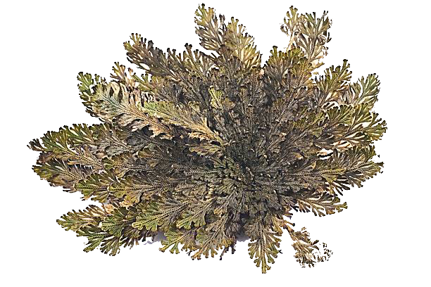
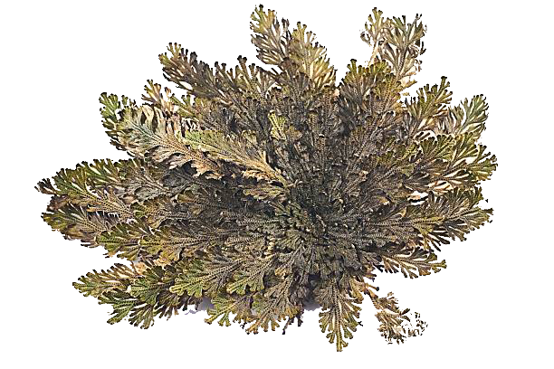

SELAGINELA
 

Descripción morfológica
La selaginela es una planta vascular sin semillas, similar a los helechos, que pertenece al filo Licopodiophyta. Presenta tallos delgados y rastreros con pequeñas hojas escamosas dispuestas en espiral.
Posee raíces adventicias y estructuras reproductivas llamadas esporangios que se agrupan en estróbilos. Algunas especies pueden enrollarse durante la sequía y volver a abrirse al recibir agua, fenómeno conocido como resurrección.
Distribución y hábitat
Habita principalmente en zonas húmedas y sombreadas de regiones tropicales y subtropicales, incluyendo bosques nublados y suelos ricos en materia orgánica.
También puede encontrarse en jardines botánicos y colecciones especializadas debido a su apariencia exótica y valor ornamental.
Ciclo de vida y reproducción
La selaginela tiene un ciclo de vida perenne. Se reproduce por esporas, las cuales germinan para formar gametofitos masculinos y femeninos separados (heterospóricas).
Este tipo de reproducción permite una mayor especialización en la fecundación. No produce flores ni semillas.
Usos principales
🌿 Ornamental: Muy apreciada en terrarios, jardines húmedos y como planta decorativa por su follaje fino y su adaptabilidad a ambientes interiores húmedos.
🌿 Científico: Utilizada como modelo en estudios evolutivos y fisiológicos de plantas vasculares primitivas.
Ficha botánica
| Nombre común | Selaginela |
|---|---|
| Nombre científico | Selaginella spp. |
| Reino | Plantae |
| Filo | Licopodiophyta |
| Clase | Lycopodiopsida |
| Orden | Selaginellales |
| Familia | Selaginellaceae |
| Género | Selaginella |
| Tipo de planta | Hierba perenne |
| Altura | Hasta 20 cm |
| Reproducción | Esporas (heterospóricas) |
| Usos | Ornamental, educativo |